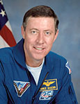

Lyndon B. Johnson Space Center
Houston, Texas 77058
|
National Aeronautics and Space Administration Lyndon B. Johnson Space Center Houston, Texas 77058 |
 |
Biographical Data |
||
Michael A. Baker (Captain, U.S. NAVY, Ret.)
International Space Station Program Manager
for International and Crew Operations
Johnson Space Center
PERSONAL DATA: Born October 27, 1953, in Memphis, Tennessee, but considers Lemoore, California, to be his hometown. Three children. He enjoys tennis, swimming and hiking.
EDUCATION: Graduated from Lemoore Union High School, Lemoore, California, in 1971; received a bachelor of science degree in aerospace engineering from the University of Texas in 1975.
ORGANIZATIONS: Member of the Society of Experimental Test Pilots and the Association of Space Explorers.
SPECIAL HONORS: Awarded the Defense Superior Service Medal, 2 Defense Meritorious Service Medals, the Distinguished Flying Cross, the Legion of Merit, the Navy Unit Commendation, 3 Meritorious Unit Commendations, the Battle "E" Award, NASA Distinguished Service Medal, NASA Outstanding Leadership Medal, NASA Exceptional Service Medal, 4 NASA Space Flight Medals, 3 Navy Expeditionary Medals, the National Defense Medal, 2 Sea Service Awards, and the Overseas Service Award. Named 1993 Outstanding University of Texas Alumni.
EXPERIENCE: After graduation from the University of Texas, Baker completed flight training and earned his Wings of Gold at Naval Air Station Chase Field, Beeville, Texas, in 1977. In 1978, he was assigned to Attack Squadron 56, embarked in the USS Midway, homeported in Yokosuka, Japan, where he flew the A-7E Corsair II. In late 1980 he was assigned to Carrier Air Wing 30 as the air wing landing signal officer. He attended the U.S. Naval Test Pilot School in 1981 and, after graduation, was assigned to the Carrier Suitability Branch of the Strike Aircraft Test Directorate. While there, Baker conducted carrier suitability structural tests, aircraft carrier catapult and arresting gear certification tests, and automatic carrier landing system certification and verification tests on the various aircraft carriers of the Navy’s fleet in the A-7 aircraft. In 1983, he returned to the U.S. Naval Test Pilot School as an instructor. He was then assigned as the U.S. Navy exchange instructor at the Empire Test Pilots School in Boscombe Down, England, teaching performance, flying qualities and systems flight test techniques.
He has logged over 5,400 hours flying time in approximately 50 different types of airplanes, including tactical jets, VSTOL, multi-engine transport and rotary wing aircraft, and has over 300 carrier landings to his credit.
NASA EXPERIENCE: Selected by NASA in June 1985, Baker became an astronaut in July 1986 upon completion of a one-year training and evaluation program.
Following the Challenger accident, from January 1986 to December 1987, Baker was assigned as a member of the team that was pursuing redesign, modification and improvements to the Shuttle Landing and Deceleration Systems, including nosewheel steering, brakes, tires, and drag chute, in an effort to provide greater safety margins during landing and rollout. He was then assigned to the Shuttle Avionics Integration Laboratory (SAIL), where he was involved in the checkout and verification of the computer software and hardware interfaces for STS-26 (the return-to-flight mission) and subsequent flights.
Baker then served as an ascent, entry and orbit spacecraft communicator (CAPCOM) for STS-27, STS-29, STS-30, STS-28, STS-34, STS-33, STS-32, STS-36, STS-31, STS-38, and STS-35. In this capacity his duties included communication with the Shuttle crew during simulations and actual missions, as well as working procedural problems and modifications between missions. He served as the leader of the Astronaut Support Personnel team at the Kennedy Space Center for Shuttle Missions STS-44, STS-42 and STS-45. From December 1992 to January 1994 he was assigned as the Flight Crew Operations Directorate Representative to the Space Shuttle Program Office. From March to October 1995 he served as the Director of Operations for NASA at the Gagarin Cosmonaut Training Center in Star City, Russia. He was responsible for the coordination and implementation of mission operation activities in the Moscow region for the joint U.S./Russian Shuttle/Mir program.
From October 1997 to August 2001 he was the Assistant Director of Johnson Space Center (JSC) for Human Space Flight Programs, Russia and was responsible for implementation and integration of NASA’s Human space flight programs in Russia. Those activities included International Space Station (ISS) training, operations, technical liaison, logistics and personnel administration support. He also served as the NASA JSC representative to the Russian Space Agency, Gagarin Cosmonaut Training Center, Star City; Mission Control Center-Moscow, Energia Rocket and Spacecraft Corporation, Krunichev State Scientific and Production Space Center and other Russian government agencies and manufacturers involved in the ISS program.
A veteran of four space flights, Baker has logged 965 hours in space. He served as pilot on STS-43 (August 2-11, 1991) and STS-52 (October 22 to November 1, 1992), and was the mission commander on STS-68 (September 30 to October 11, 1994) and STS-81 (January 12-22, 1997).
Mike Baker is currently assigned as the International Space Station Program Manager for International and Crew Operations and is responsible for the coordination of program operations, integration and flight crew training and support activities with the International Partners.
SPACE FLIGHT EXPERIENCE: STS-43 space shuttle Atlantislaunched from NASA’s Kennedy Space Center, Florida, on August 2, 1991. During the flight, crew members deployed the fifth Tracking and Data Relay Satellite (TDRS-E), in addition to conducting 32 physical, material, and life science experiments, mostly relating to the Extended Duration Orbiter and Space Station Freedom. After 142 Earth orbits, the 9-day mission concluded with a landing on Runway 15 at the Kennedy Space Center on August 11, 1991. Mission duration was 213 hours, 21 minutes, 25 seconds.
STS-52 space shuttle Columbialaunched from the Kennedy Space Center, Florida, on October 22, 1992. During the mission crew members deployed the Italian Laser Geodynamic Satellite (LAGEOS) that will be used to measure movement of the Earth’s crust, and operated the U.S. Microgravity Payload 1 (USMP-1). Additionally, the Space Vision System (SVS) developed by the Canadian Space Agency was tested by the Canadian payload specialist and the crew using a small target assembly that was released from the remote manipulator system. The SVS will be used for Space Station construction. These three primary payloads together with numerous other payloads operated by the crew encompassed geophysics, materials science, biological research and applied research for Space Station Freedom. Following 159 Earth orbits, the 10-day mission concluded with a landing on Runway 33 at the Kennedy Space Center on November 1, 1992. Mission duration was 236 hours, 56 minutes, 13 seconds.
STS-68 space shuttle Endeavour launched from the Kennedy Space Center, Florida, on September 30, 1994. This flight was the second flight of the Space Radar Laboratory (SRL) comprised of a large radar called SIR-C/X-SAR (Shuttle Imaging Radar-C/X-Band Synthetic Aperture Radar) and MAPS (Measurement of Air Pollution from Satellites). As part of NASA’s Mission to Planet Earth, SRL was an international, multidisciplinary study of global environmental change, both natural and man-made. The primary objective was to radar map the surface of the Earth to help us understand the contributions of ecology, hydrology, geology, and oceanography to changes in our Planet’s environment. Real-time crew observations of environmental conditions, along with over 14,000 photographs, aided in interpretation of the radar images. This SRL mission was a highly successful test of technology intended for long-term environmental and geological monitoring of planet Earth. Following 183 Earth orbits, the eleven-day mission concluded with a landing on Runway 22 at Edwards Air Force Base, California, on October 11, 1994. Mission duration was 269 hours, 46 minutes, 10 seconds.
STS-81 space shuttle Atlantis launched from the Kennedy Space Center, Florida on January 12, 1997. STS-81 was the fifth in a series of joint missions between the U.S. space shuttle and the Russian Space Station Mir and the second one involving an exchange of U.S. astronauts. In five days of docked operations more than three tons of food, water, experiment equipment and samples were moved back and forth between the two spacecraft. Following 160 Earth orbits the STS-81 mission concluded with a landing on Kennedy Space Center’s Runway 33 ending a 3.9 million mile journey. Mission duration was 244 hours, 56 minutes.
JUNE 2014